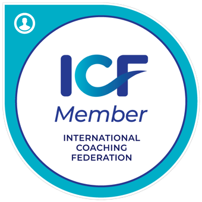

Contact.
I live in the East Midlands and would be happy to travel reasonable distance to coach face to face.
There was once a woman who was very capable, smart and witty, who knew she had so much to offer the world. She was passionate about the arts, education and justice. She knew she could make a difference somewhere and wanted to empower people to reach their potential.
The irony was she really struggled to accept her own potential... to truly believe in herself and her abilities. Years went by taking jobs and striving to forge her career. She took many paths, sometimes retracing her steps, stopping at a crossroads for a break, picking herself up and starting again. This search took a number of years. Along the way were some great achievements. Yet she still didn't feel the sense of greatness and triumph deep down within. Tired and lethargic, the journey of life felt defeating.
Over time the woman began to feel alive with confidence
Then something happened... this woman went to work in a new role. The job was interesting. It brought together education, empowering others and making a difference to peoples’ lives.... and the people she worked with were brilliant. The most brilliant of all was her manager. This person saw the woman. Saw her potential, believed in her and became her champion. Over time the woman became alive with confidence. She took on more work with the true belief she could do it... and she could do it well. People noticed her. She became an expert in her chosen field. People asked her advice. All the while her manager continued to support her and build her confidence.
How did the manager make such a huge difference to the woman’s life? Did they have all the answers and keep feeding them to her? Did they take away things that were too difficult and make the woman’s life easier? No, the manager coached the woman in a very subtle way. They asked incisive questions when the woman was at a crossroads; they encouraged the woman to explore her drivers and motivations, to identify her strengths and recognise her achievements for herself. The manager helped the woman to understand her limiting beliefs and vanquish them.
The woman’s manager was a coach and used coaching skills to manage the team.
I am that woman. I understand the power of coaching and how it can change lives. I have now trained as a professional coach and I want to share the transformational wonder of coaching with you. You can be your best self and make changes... and you have the ability to do so within you already.
I have had an eclectic career, starting out as a documentary photographer and most recently working in student support services in higher education. Along the way I have volunteered with education charities and with community projects, sharing my skills and learning new ones. I am passionate about life-long learning and empowering people to become the best they can be. I believe we all have the capacity to live the lives we want.
My experience of working in different businesses across all sectors shows that we don't just live life on one path. We can change and adapt, taking ourselves to new places.
My skills include creating and delivering training to individuals and groups; coaching and mentoring for career development; change project management and completion; event management. I have worked with students in primary and higher education, as well as adults.
I have recently trained with Barefoot Coaching in Business & Personal Coaching. I am a member of the International Coaching Federation (ICF) and coach within the ICF Core Competency framework. I am also currently working towards higher ICF accreditation and Postgraduate Certificate in Coaching.
I currently hold DBS certificates for working with adults and children.
Genuine alignment of words, actions, values and body language. Very natural and authentic.”
I found my sessions with Catherine to be very thought provoking, often exploring areas that had not occurred to me. Since attending, I have found myself taking more time and care when assessing situations, leading to better outcomes in general.”
Catherine was extremely engaging and was excellent in making me feel relaxed whilst talking through a wide range of issues.”
I learnt a lot about myself as a person, who I am, and what I value.... it helped me to inform my choices for future projects.”
I enjoy working with all types of clients. My style is very much based on a 'Thinking Partner' model, allowing clients the space and time to explore their own thoughts. This way of working provides the opportunity to explore deeply held beliefs and values, including those that can limit our potential. Listening actively and using tools as appropriate, I can work with you to define your goals, however small or large, and create the space to reach them.
Coaching is the process of helping you identify and overcome your personal and professional challenges and achieve your desired outcomes. A coach will use deep listening, some questions and short exercises to help you realise and overcome your barriers.
A coach is a thinking partner, who won't provide solutions but enable you to explore possible solutions or paths yourself. A core principle behind coaching is that the client who has the challenge will also have the solution - they just don't know it yet!
I live in the East Midlands and would be happy to travel reasonable distance to coach face to face.
All coaching sessions will start with a pro bono 20 minute chemistry session via online call. This is an opportunity for us to meet and discuss a potential coaching relationship going forwards.
Coaching sessions via online call.
Up to 90 minutes.
£65
Coaching session outside in a green space.
Up to 90 minutes.
including travel.
£75
Coaching sessions in a mutually convenient place.
Up to 90 minutes.
including room hire and travel.
£85
Coaching is helpful for all sorts of things. Examples include change in career, change in life situation, promotion at work, personal relationships, how to be more productive or achieving a specific goal.
This depends on what you bring to each session and what your goals for coaching are. Usually clients have between 2 and 6 sessions at a time.
This depends on your goals but usually between fortnightly or monthly.
Not at all. You decide how much coaching you want, there is no obligation.
Not if you don't want to. Sometimes it can be helpful to undertake small exercises between sessions or simply take time for reflection. I won't make you do anything that you don't want to do.
Therapy is focused on understanding the past and healing traumas. A coach helps you to evaluate your current place and support you in going forwards. A coach empowers you to find solutions yourself and create action plans.
Coaching might seem expensive, but it can be helpful to think of other services you spend money on e.g. personal trainer or physiotherapy. Coaching is a service for self-development and improvement, to help you feel your best.
I live in the East Midlands and would be happy to travel reasonable distance to coach face to face.